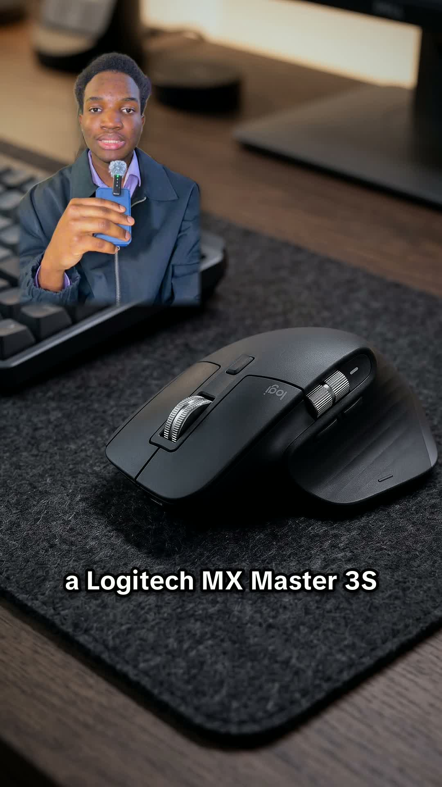
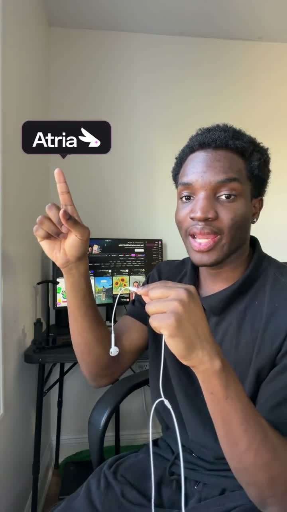

Four recent videos that show my editing style: the hook, the pacing, the captions, and the payoff.
TECH CULTURE / SKIT
GTA 6 boyfriend simulator
The updated cut: GTA 6 turns players into good boyfriends.
AI NEWS / REMIX
Jensen Huang scandal
The remixed version that went live.
AI NEWS / COMMENTARY
Jensen returns as Nvidia CEO
On-camera commentary with a story arc.
PRODUCT DESIGN / COMMENTARY
Fake countdown timers
A visual breakdown of a familiar product trick.
Swipe to explore01 / 04
02 / BRAND CREATIVE
Made for brands.
Explainers, list videos, and a social series. Each built around the product and the audience.

TEAMILY / LIST FORMATON CAMERA + EDIT
Student tech picks
A quick list built from on-camera narration, product shots, and captions.

ATRIA / EXPLAINERON CAMERA + EDIT
Atria
A direct-to-camera setup that brings the product into the story.
Swipe to explore01 / 02
TAB / SOCIAL SERIES
Group chat videos for Tab.
Four posts from my Tab work, built around hooks and questions people can bring into their group chats.
TAB / GROUP CHAT
If your group chat is falling off
TAB / CONVERSATION STARTERS
10 out of 10 questions to drop in the group chat
TAB / CONVERSATION STARTERS
10/10 questions you need to ask your group chat
TAB / GROUP CHAT
Lock in before it's too late
Swipe to explore01 / 04
03 / MY PROCESS
From product to post.
A simple process that keeps the product clear and the video watchable.
01 / FIND THE ANGLE
Start with the real use
I explore the product, then choose the one feature or friction point worth making a video about.
02 / MAKE IT A STORY
Build the hook
I shape a skit, demonstration, or direct-to-camera take around what a viewer would actually care about.
03 / FINISH THE CUT
Edit for the feed
Captions, pace, and visuals make the idea easy to follow with or without sound.
04 / ABOUT NONSO
Creator brain. Builder brain.
I'm Nonso, a CS student, software builder, and UGC creator based in Halifax, Canada.
Building software helps me spot what makes a tool useful. Making videos helps me explain it in a way that feels natural on social. I bring both sides to every tech story I make.
AI toolsSoftwareProduct demosTech culture
05 / Contact
Have an app worth showing?
Send the product, your audience, and what you want the video to do. I'll take it from there.